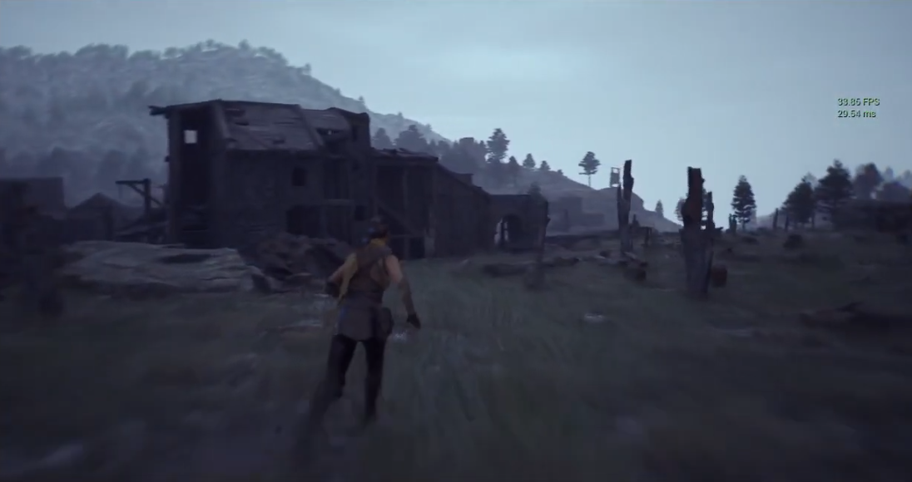
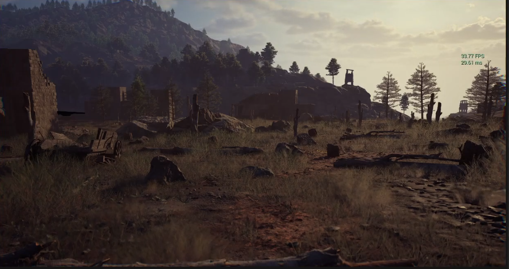

Shatterborn: Price of Blood plunges you into a twilight Roman Africa, where the ancient ruins still harbor the fading traces of a long-forbidden force.
You embody Esran, a Titan living in the shadows, haunted by a shattered past. When the Obscuris resurfaces, he must follow a truth buried for centuries through the ruins, Rome's lies, and time's wounds.


Founded in 2026, Noorframe Interactive is an independent game studio dedicated to creating premium solo video game experiences for PC and consoles.
Passionate about narrative solo adventures, our ambition is to build memorable worlds and stories that leave a lasting impact, while preserving execution quality and independent agility.